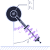
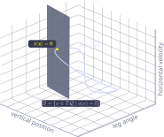
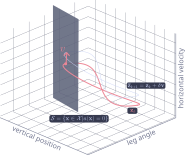
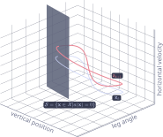
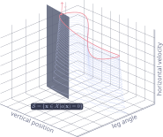
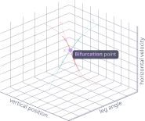
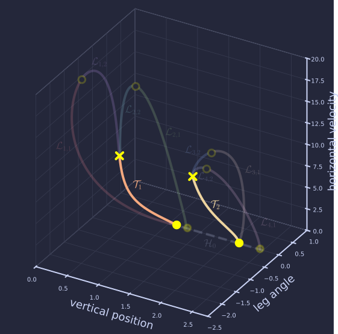
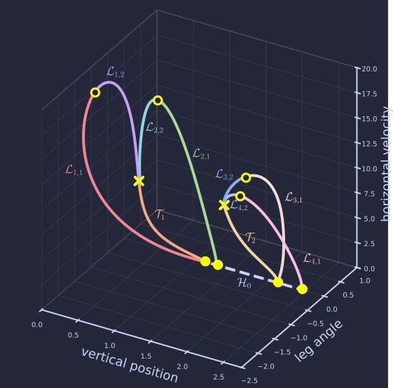
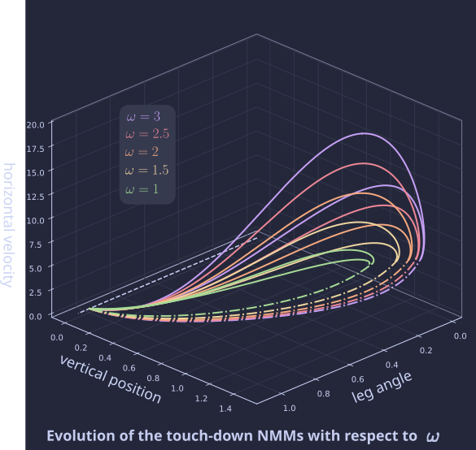
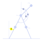

- Gan, Z., Yesilevskiy, Y., Zaytsev, P. & Remy, C. D. (2018). All common bipedal gaits emerge from a single passive model.. Journal of the Royal Society Interface, 15(146). https://doi.org/10.1098/RSIF.2018.0455
- Rosa, N. and Lynch, K. (2014). Extending equilibria to periodic orbits for walkers using continuation methods. 2014 IEEE/RSJ International Conference on Intelligent Robots and Systems. https://doi.org/10.1109/IROS.2014.6943076
- Gan, Z., Jiao, Z. & Remy, C. D. (2018). On the Dynamic Similarity Between Bipeds and Quadrupeds: A Case Study on Bounding. IEEE Robotics and Automation Letters, 3. https://doi.org/10.1109/LRA.2018.2854923
- Raff, M., Rosa, N. & Remy, C. D. (2022). Connecting Gaits in Energetically Conservative Legged Systems. IEEE Robotics and Automation Letters, PP. https://doi.org/10.1109/LRA.2022.3186500
- Calzolari, D., Della Santina, C. & Albu-Schäffer, A. (2025) . Exciting families of passive gaits in an elastic quadruped via natural motion manifold control. The International Journal of Robotics Research. https://doi.org/10.1177/02783649251347305
- Westervelt, E. R., Grizzle, J. W., Chevallereau, C., Choi, J. H., & Morris, B. (2018). Feedback control of dynamic bipedal robot locomotion. CRC press.
Natural Motion Manifolds
Leveraging the geometry of the trajectory space to perform efficient agile locomotion
Presented by Gabin Lembrez

A non-linear conservative system
- A classical template for legged locomotion with $n=3$ DOFs
- Assumption: massless leg
- Hybrid dynamics: $$ \left\{ \begin{matrix} \dot{x} = f_i(x) & x \in \mathcal{X} \\ x^+ = \Delta_i (x^-) & x^- \in \mathcal{S}_i \end{matrix} \right. $$
The problem
Agile legged locomotion is not limited to periodic limit cycles !
- How to maximize the use of intrinsic dynamics in locomotion ?
- How to perform a reversing maneuvre efficiently ?


Poincaré section and periodic orbits
- Surface $\mathcal{S}$ of dimension $n-1$ transverse to the flow $x(t)$
- First return map $P:\mathcal{S}\rightarrow \mathcal{S}$
- In a neighborhood of a periodic orbit there are other periodic orbits (Raff & al., 2022)
Raff, M., Rosa, N. & Remy, C. D. (2022). Connecting Gaits in Energetically Conservative Legged Systems. IEEE Robotics and Automation Letters.
Natural Motion Manifold
A two-dimensional invariant sub-manifold $\mathcal{M}\subset \mathcal{X}$ is a Natural Motion Manifold if all evolutions on it are periodic and conservative (Calzolari & al., 2025).
Calzolari, D., Della Santina, C. & Albu-Schäffer, A. (2025). Exciting families of passive gaits in an elastic quadruped via natural motion manifold control. The International Journal of Robotics Research.
The Generator
- Dimension one intersection of the NMM $\mathcal{M}$ with a Poincaré section $\mathcal{S}$
- Fully describes $\mathcal{M}$
- Parametrized by energy level: $$ \gamma (E) = \{x\in \mathcal{M} | a(x) = 0\}$$





Continuation of a family of motion
- $\mathbf{z}_k$ is a periodic trajectory if $\mathbf{r}(\mathbf{z}_k)=\mathbf{0}$
- Predictor step: take a small step in the tangent space of $\mathbf{r}$: $$ \left. \frac{\partial \mathbf{r}}{\partial \mathbf{z}} \right|_{\mathbf{z}_k}\mathbf{v} = \mathbf{0} \quad \longrightarrow \quad \overline{\mathbf{z}}_{k+1} = \mathbf{z} + \delta \mathbf{v} $$
- Corrector step: Find the closest zero of $\mathbf{r}$ using Newton-Raphson

Bifurcation points
- Detection: the dimension of the tangent space is locally 2 $$ \det \left( \begin{matrix} \left. \frac{\partial \mathbf{r}}{\partial \mathbf{z}} \right|_{\mathbf{z}_k} \\ \mathbf{v}_k^T \end{matrix} \right) = 0 $$
- Continuation: projection of the equation $\mathbf{r}(\mathbf{z}^*)=\mathbf{0}$ in the plane $(\mathbf{\tau}_1,\mathbf{\tau}_2)$ to get the tangent to the new branch


Contribution 1
- Generalization of the method in Raff & al. 2022 to enable antiperiodic and period $>1$ motion ($\mathcal{T}_i$)
- Design of a collection of connected families of motion offline, through numerical continuation
Agile locomotion from motion primitives
- Goal: perform a u-turn with as little energy variation as possible.
- Idea: staying close to NMMs to maximize the use of passive dynamics.
- Leverage the transition NMM

Actuators
- Actuators are placed in parallel to the springs
- $u_f$ is only active during flight
- $u_s$ is only active during stance

Predictive control
Goal. Select the future behaviour of the robot in one step (stance-flight sequence) by switching to a different NMM in the collection
$$ \mathcal{L}_6^- \stackrel{\text{step 1}}{\longrightarrow} \mathcal{T}_2 \stackrel{\text{step 2}}{\longrightarrow} \mathcal{L}_6^+ $$
Let $\gamma (E)$ be a polynomial interpolation of the generator. Solve for $u$ over one stance-flight cycle ($N$ samples):
\[
\begin{align}
\min_u &\quad \sum_{k=0}^N \| u_k \|_R^2 \\
\text{s.t.} &\quad \dot{x}_{k} = f(x_k,u_{k}) \\
& \quad e_i(x(t_i^-)) = 0 \\
& \quad \gamma(E(x_N)) = 0.
\end{align}
\]
Contribution 2
- Successful two-steps reversing maneuvre
- Compute time $\sim 0.01 s$ using
IPOPTinCasADi - Near-optimal energy efficiency compared to not using the transition NMM

The control signals
- Excitation of the form $$ A \cos(\omega t + \phi) + b$$
- Small magnitude.
- Behaves like a "non-linear" mode.

Discussion
- Insight on the dual design problem: what stiffness yields the most efficient locomotion?
- An alternative to reinforcement learning: rely on a priori knowledge and parcimony rather than exploration through sampling.

Perspectives
- Generalize the approach to robots that dissipate energy by contact with the ground.
- Move to three dimensional systems.